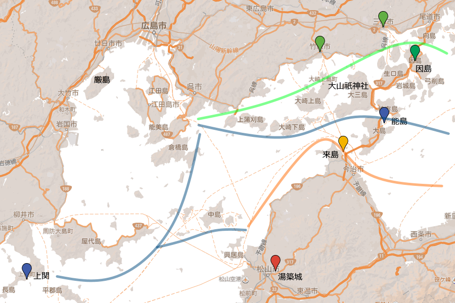
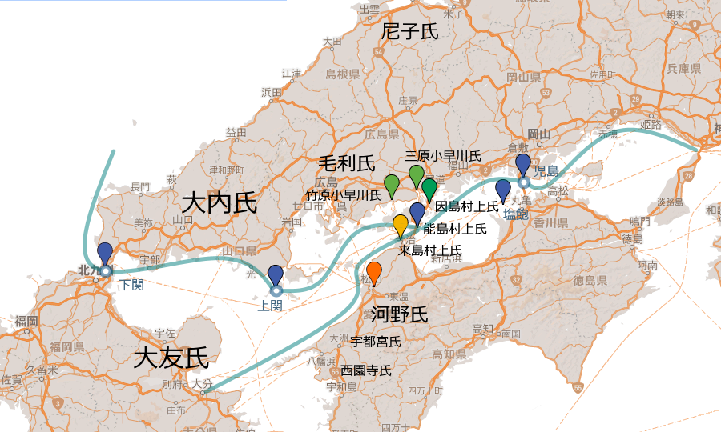

『瀬戸内の海賊: 村上武吉の戦い【増補改訂版】』
執筆日時：
")
- 作者: 山内譲
- 出版社/メーカー: 新潮社
- 発売日: 2015/10/23
- メディア: 単行本
- この商品を含むブログを見る
『村上海賊の娘 上巻』の元ネタになったとかなっていないとかいう本（『村上海賊の娘』はまだ読んでないケド）。

俗にいう村上水軍には、3つがある。
- 因島（いんのしま、備後）村上氏
- 能島（のじま、伊予）村上氏
- 来島（くるしま、伊予）村上氏
この3つの村上氏は信州の村上氏の流れをくむらしい（自称）。彼らは緩い同族意識で繋がりをもっていたが、別々に活動することが多かった。
たとえば、因島村上氏は早くから小早川氏（竹原と沼田（三原、本家）で分離していたのを、小早川隆景が統合）と強い関係を結んでいて、毛利水軍の一翼を担っていた。
一方、来島村上氏は伊予の河野氏と縁が深く、来島通康にいたっては半ば河野氏の家宰のような立場であったらしい。毛利氏が大内・陶氏に挑んだ厳島の戦いでは、「一日だけでいいから！ な！」という毛利元就の願いに応えて参戦、見事大内・陶軍を破っている。これを恩にきた毛利氏は、のちに河野氏がピンチの際に恩返しとして派兵しているが……よっぽど嬉しかったのだろうか（おそらく、大友・一条（土佐）あたりの勢力を抑える意味もあったのだと思うけど）？
上の二氏がそういうふうに活動した理由は、地図を見ればわかる気がする。
――んで。
彼らとちがい、もっとも“海賊っぽく”派手に活動したのが能島村上氏だ。“海賊っぽく”っていうのは、通行してる船をとっつかまえてカネを巻き上げてたってこと*1。当時、海賊が“関”と呼ばれていたという話は面白いと思う。むかしの人たちには海に道が見えていて*2、そこで関所を張ってたのが海賊なんだな。
“関所”のあたりを通過すると、それを見張っていた海賊が出張ってきて、“通行料”の交渉が始まる。これは夜通し行われることもあったようだ。で、話がまとまると、海賊衆が同乗するか（“相乗り”と呼ぶらしい）、後代になると旗や垂れ幕のような証になるものをもらって掲げる。そうすることで、道中の安全を保障するという仕組みだったんだな。上関・下関という地名にも納得。

やがて、能島村上氏は塩飽（しあく）諸島から上関・下関に至るまでの“海の道”を支配することになる。
しかし、来島村上氏が早くから秀吉に帰順して「くるしま、くるしま」と愛され、豊臣大名の一翼を担った*3のに対し、能島村上氏は歴史の階段を踏み間違ったのか、悲しい末路をたどる。
彼らはあくまでも独立不羈を貫こうとしたらしいが、小早川家が伊予三十五万国を受領すると、根城の明け渡しを要求される。また、派手に“海賊稼業”に精を出しすぎたせいか、名指しで「海賊やめろやくそボケ」と言われ（海賊停止令 - Wikipedia）、上洛して弁明する羽目になったことも。もはや「自由な海賊稼業」とはいかない世の中になりつつあったのだ。伊予に所縁があり、河野氏へも同情的だった小早川家を秀吉が九州へ移封し、福島正則・戸田勝隆が伊予に移ってくると、河野家に縁のある豪族はさらに伊予へ居づらくなったらしい。この頃、能島村上氏は能島を離れ、所領に持っていた周防屋代島（大島）や九州へ移ったようだ。隆景がなくなり、秀吉の養子・秀秋が小早川家を継ぐと、毛利家に臣従し、最終的には長門、しかもその日本海側へ移る。瀬戸内の竹原*4へ戻ってこれたのは秀吉の死後のことだったが、どうやら瀬戸内を離れざるを得なかった理由には、秀吉との因縁もあったらしい*5。
そして、家運挽回を期して挑んだ関ケ原の戦い。
能島村上氏は毛利氏（西軍）につき、武吉から家督を継いでいた元吉は阿波の蜂須賀家（東軍）を攻撃、ついで伊予に封じられていた加藤嘉明（東軍）の留守を狙う（河野氏の末裔を奉戴してのことだともいう）。しかし、三津浜で西軍の逆襲を受け、元吉が討ち死に。武吉の失意はいかばかりだったろう。
関ケ原の戦後処理で毛利氏が防長二カ国に押し込められると、武吉は再び竹原の地を後にせざるを得なくなる（竹原崩れ）。以後は、毛利家の一家臣として三田尻で船手衆を務め、朝鮮通信使の警護などの任に当たり、ほぞぼそと村上水軍の伝統を伝えた。
ちなみに、来島氏は小さいながらも一藩を立て（森藩 - Wikipedia）、明治まで存続したが、内陸藩だったので海に関わることは二度となかったという。